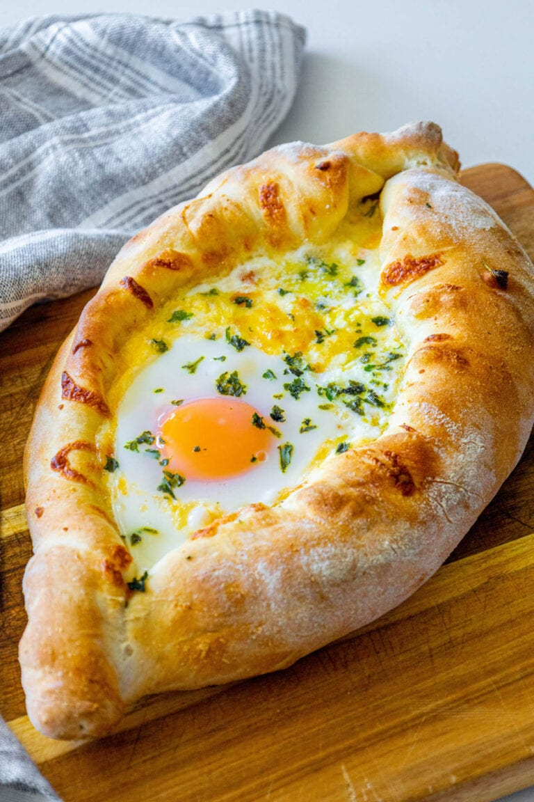

Khachapuri

Adjarian Khachapuri
The Georgian word khachapuri directly translated to English means "cheesebread", which is rather appropriate considering that cheese and bread are pretty much the only ingredients in most varieties of the dish. This recipe is for Adjarian Khachapuri (the delicious looking dish pictured above), a rather photogenic type of khachapuri whose creators in the Adjara region of Georgia added another ingredient - an egg. The following recipe will guide you through the simple, yet somewhat time consuming, process of making Adjarian Khachapuri.
Ingredients (serves 4)
- 1/2 cup warm milk
- 1/3 cup water
- 1 (.25 ounce) package active dry yeast
- 1 ½ teaspoons white sugar
- 2 ¼ cups all-purpose flour, or more as needed, for dusting
- 2 teaspoons olive oil
- 1 ½ teaspoons kosher salt
- 8 ounces feta cheese, crumbled
- 4 ounces Monterey Jack cheese, shredded
- 4 ounces low-moisture mozzarella cheese, shredded
- 2 large eggs
- 1 tablespoon butter, cut into 4 pats
- sea salt to taste
- 1 pinch cayenne pepper, or to taste (Optional)
Steps
- Make dough: Combine milk, water, yeast, and sugar in a large bowl. Let stand until yeast forms a creamy foam, about 5 minutes. Add 2 cups flour, olive oil, and salt; mix until a sticky dough forms.
- Turn dough out onto a floured surface. Knead for about 3 minutes, adding in remaining 1/4 cup flour as needed, until dough is very soft but still workable. Form into a ball and place in a lightly oiled bowl. Cover and let rise in a warm spot until doubled in volume, 1 to 1 1/2 hours.
- Preheat the oven to 475 degrees F (245 degrees C).
- While dough rises, prepare cheese blend: Toss together feta, Monterey Jack, and mozzarella cheese in a medium bowl. Refrigerate cheese mixture until needed.
- Punch down dough and turn out onto a floured surface. Flatten slightly and cut in half. Place 1 dough half on a sheet of parchment paper dusted with flour. Roll out into a rectangle about 1/8- to 1/4-inch thick.
- Arrange 1/4 of the cheese mixture in 2 rows, 1 to 2 inches from the longest sides. Roll sides up tightly over cheese, forming a canoe shape. Pinch and twist ends to seal. Trim excess parchment and lift dough onto a baking sheet. Shape and stuff remaining dough half. Fill canoes with remaining cheese mixture.
- Bake in the preheated oven for 15 minutes. Form a well in the center of each khachapuri using a spoon; crack an egg inside each well.
- to 4 minutes. Place 2 pats butter over each egg, then sprinkle with salt and cayenne. Plate khachapuri; tear off one end and use it to stir butter into egg.